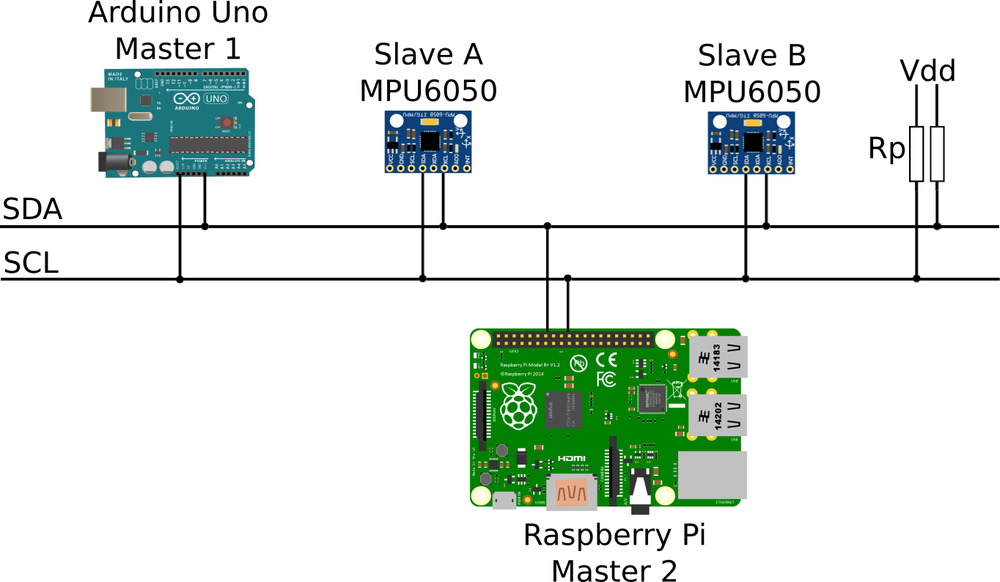

I2C
Introduction
I2C (pronounced I-two-C) is a very popular communication protocol in the word of microcontrollers. It's advantage is that it allows communication between multiple devices by using only two wires, SDA (Serial Data Line) and SCL (Serial Clock Line). The protocol was invented by Phillips Semiconductors in 1982. The first time I encountered I2C was when I wanted to measure the orientation in space with my Arduino. For that purpose I bought an MPU6050 inertial measurement unit (IMU) that required I2C to talk to it. At first I was really confused since I had no experience with digital communication protocols except some basic understanding of USART by using Arduinos Serial library. The first time I looked at an example code for reading accelerometer and gyroscope data from the MPU6050, it scared the hell out of me with ~100 lines of code consisting of nothing but a bunch of hexadecimal register addresses. This is when I realized that in order to do something more than just sending a "Hello World!" string via serial line requires some more dedication. That's why I encourage anyone who is motivated to build something using microcontroller to stick with it whenever you encounter something that looks intimidatingly challenging at first, because before you realize it, it will click and this is one of the best rewards you can get while learning new things or coding, besides, of course, finiding that bug that took a couple of years of your life. In this tutorial I will try to do my best to explain the principle of the I2C protocol and show an example in C language for the ATmega328P microcontroller and one for the Arduino. For both examples I will use the MPU6050 IMU.
Basics
I2C protocol is a multi-master, multi-slave, which means that a system of nodes (devices) can have multiple master devices and multiple slave devices. To understand what this means you need to understand what each one of them does:
- Master Device: Generates the clock and initializes the communication with a slave device
- Slave Device: Receives the clock and responds when addressed by the master.
The microcontrollers such as the ATmega328 can be configured to act as a master or a slave device, whereas simpler sensor devices usually support only the slave mode.
Clock
As I mentioned earlier, the I2C requires two wires to communicate with the devices. The Serial clock line or SCL is where the master sends the generated clock signal that the slave devices receives. With this said, a shared clock between the master and slave devices makes I2C a synchronous protocol, in contrast of USART, which is asynchrounous. In asynchronous protocols the two devices talking to each other need to know in advance the rate at which they will transfer bits (baudrate). The other wire is the serial data line or SDA where the data, the payload, is transmitted between the devices.
The clock that the master generates defines the rate at which the data is transfered. I2C supports various clock speeds, but simple devices commonly used for simple microcontroller projects support the original 100 kHz mode or the 400 kHz fast-mode. The faster supported mode for I2C is 5 GHz Ultra Fast-mode.
Addressing
The number of devices that I2C can communicate with are defined by the number of bits each device's address consists of. I2C devices can have 7 or 10 bit addresses. In theory, the largest number that a 7-bit address can be is (1111111)2 or (127)10, which would define the maximum number of devices connected to the same bus. Since there are some address that are reserved and cannot be used for addressing, the largest number is (112)10. (I am using the parentheses with a subscript to indicate the base of the number, so 2 for binary and 10 for decimal, later I will use 16 for hexadecimal.) The maximum number of devices is limited on the physical layer by the total bus capacitance.
Protocol
To explain how the protocol works I will use an example of three human slaves, where each one monitors a different sensor and reports the reading to the one of the two masters when they request it. Image below shows the three slaves and two masters.

Slave A monitors a humidity sensor, slave B a thermometer and slave C a barometer. Masters 1 or 2 can ask the slaves for a reading whenever they want by addressing a desired slave and requesting the sensor reading. In smaller microcontroller projects, you will most likely use a single master, but in order to explain the full functionality of I2C, I'm using two masters.
One thing to keep in mind when using multiple masters is that they cannot communicate with each other, but they have to listen to I2C bus if anyone else is transmitting before requesting data from the slaves, so they don't request it at the same time, since the slaves would not understand what masters want if they request something at the same time. This also applies to the regular conversation between people. If you talked to an audience, everyone who listened would understand what you are saying (assuming you talked loud and clear in a language everyone understood). But if everyone in the audience tried to tell you something at the same time, you would just hear some jibber jabber. If two or more master devices would transmit a packet to slaves at the same time, the packets would collide, so in case of a multi-master I2C setup, some sort of packet collision aviodance mechanism has to be implemented. As I wrote before, this only applies if you have a project consisting of multiple master devices, otherwise do not worry about this now.
For the beginning let's forget about the clock signal and focus only on the protocol of how the data is transmitted. Since there are three different slaves, each one of them has a name (an address) by which the master is going to get his (let's assume this slaves are all men) attention. To keep it simple I will just name them A, B an C, as depicted on the image.They agreed in advance that to get the data from slaves, a master has to first ring a bell, then get desired slave's attention and then tell the slave in what units the data should be reported. After that master gets a pencil and paper to write down the measurement received from the slave and call the name of the slave again, so the slave reports the measurement. Once the measurement is written down, the master rings the bell again to mark the end of conversation. The also agreed that whenever someone tells something to another, the receiver acknowledges that the instruction was heard. For an example, the conversation between a master and a slave to receive the temeperature in Fahrenheit would go as following:
| Subject | Device | Message |
|---|---|---|
| Start Condition | Master 1: | |
| Slave Address | Master 1: | "slave B listen" |
| Slave Acknowledgment | Slave B: | "yes sir" |
| Slave Instruction | Master 1: | "report temperature in F" |
| Slave Acknowledgment | Slave B: | "yes sir" |
| Slave Address | Master 1: | "slave B go ahead" |
| Slave Acknowledgment | Slave B: | "yes sir" |
| Slave Report | Slave B: | "95" |
| Master Acknewledgment | Master 1: | "got it" |
| Stop Condition | Master 1: |
This conversation seems to have many redundant messages, but since this protocol is not really intended for humans, but digital devices, so let's replace human masters and slaves with a bunch of digital devices as shown on the image below.
This setup uses two masters as well, one is an Arduino Uno used to control something and the other one is Raspberry Pi used for logging the data to a remote database. The slaves are 2 IMUs (Inertial Measurement Units) placed at two different locations on someting (ex. airplane) to get the acceleration and/or angular rates. As I said earlier, the second master, in this case the Raspberry Pi, is used here only to show that multiple master can be connected to the same I2C bus. In this example though I will only use Arduino to talk to slave devices.
As we switched from people to digital devices, the first thing to do is to wire them properly. As you can see on the image above, both I2C wires, SDA and SCL are connected to some voltage source with 2 pull-up resistors. The reason this is implement is that the I2C lines are so called "open drain", which means that the signal can be pulled to low, but not to high. For projects with Arduino, Raspbeery Pi and similar devices, that source will usually be 3.3 or 5 V. The selection of pull-up reisistors a bit more complicated, since an optimal resistance depends on the length of the wires and the number of connected devices. Sparkfun recommends to start with 4.7 kΩ resistors and work down if needed. All the devices need to be connected to a common ground, this is very important. Before getting all frustrated by selecting proper pull-up resistors make sure that the devices used don't implement them already, for instance MPU6050 has both lines connected to high with 4.7 kΩ resistors.
Now that all's hooked up, let's go into the basics of the protocol. The clock signal on the SCL is generated by the master devices when one it initiates the communication. When no communication is taking place SCL is constantly pulled to high. A very important rule of the protocol is that a signal on SDA can change only when the clock is low, except when the master assign the start and stop of the communication. Start and stop conditions consist of a change of state when the clock is high, they are defined as:
- Start: SDA is pulled from high to low
- Stop: SDA is pulled low from high.
For this example I will asume all the I2C slaves use 7-bit addresses, slave A has the address (68)16 and slave B the address (69)16. As you can see this addresses are expressed in hexadecimal, this is very common convention for all memory addresses. Hexadecimal numbers are conventionaly used to addressing memory locations and register, since using in binary the addresses would become very long and confusing. Conversion between hexadecimal and binary is also very simple.
Communication Principle
- I2C clock speeds
- Connections (common ground, open drain -> pull-ups)
- "offtopic" create a registers tutorial
- Start/Stop address read/write ACK/NACK registers (explain those briefly -> something that I learned from programing AVRs) repeated start
- Write to MPU6050 example
- Read from MPU6050 (repeated start) exampe
- Outline for establishing the communication (regardless of the micro controller)
- Some basic physics (time constant)
Author: alex.kraljic@gmail.com